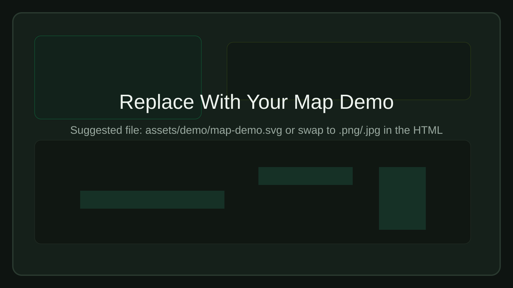
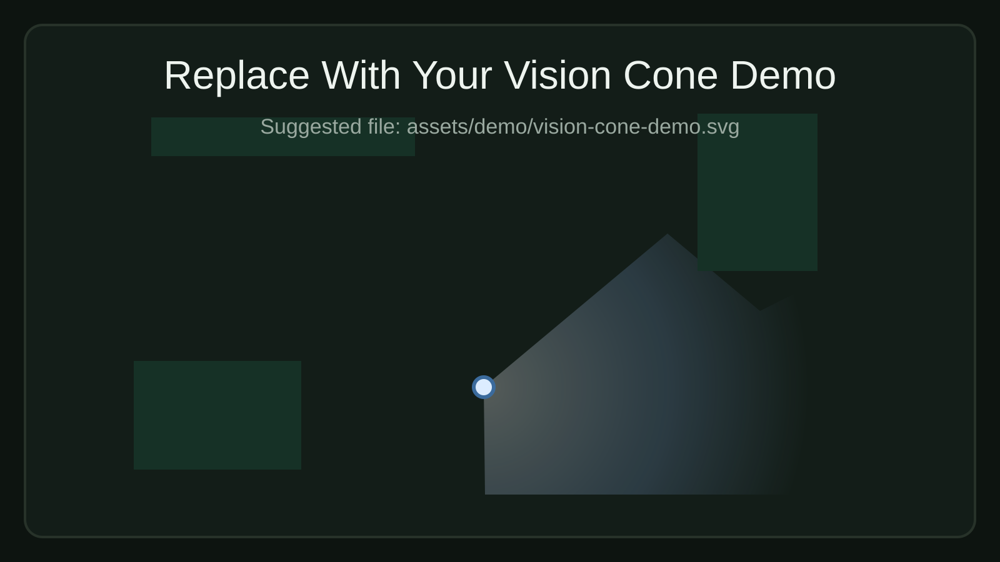
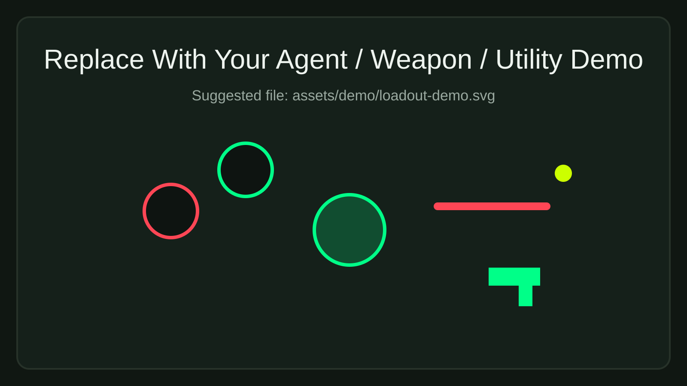

The Simulation
The backend resolves combat using a tick-based model. Weapon class, positioning, side advantage, utility overlap, and line disruption all feed into the combat power calculation.
Tactical Strategy Sandbox
FPS Strat Simulator is a one-page tactical planning workspace for 2D shooter scenarios. It combines interactive map control, agent and utility placement, live vision modeling, and combat simulation into a single tool.
The backend resolves combat using a tick-based model. Weapon class, positioning, side advantage, utility overlap, and line disruption all feed into the combat power calculation.
Multiple tactical maps can be swapped from the dropdown. Changing the map resets live objects, drawings, and vision state so each plan starts clean.
Agents can be dropped onto the board, assigned weapons, moved by side, and combined with utilities to model team setups and site hits.
Pen, eraser, text, spike, ping, and vision tools turn the map into a planning canvas for rotations, executes, defaults, and retakes.
Demo Surfaces
The page is already wired for three visual showcases. Replace the files in `assets/demo/` with your own images while keeping the filenames the same.
Map Showcase
Use this area for a full tactical map screenshot that shows the board, side context, and planning environment.
assets/demo/map-demo.svg

Vision Cone
Use a screenshot that highlights cone direction, occlusion, and how the visibility polygon reacts to geometry.
assets/demo/vision-cone-demo.svg

Agents + Weapons + Utilities
This slot is meant for an image showing agents on the board alongside weapons, utilities, or planning tools working together.
assets/demo/loadout-demo.svg
